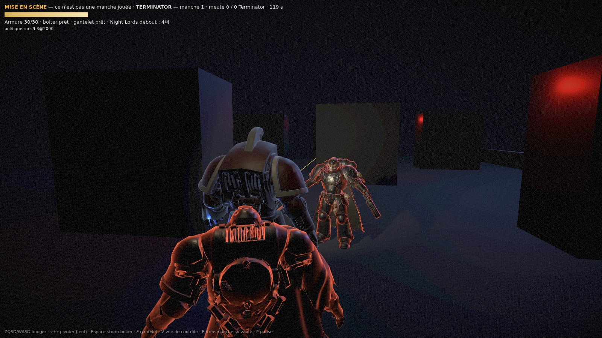
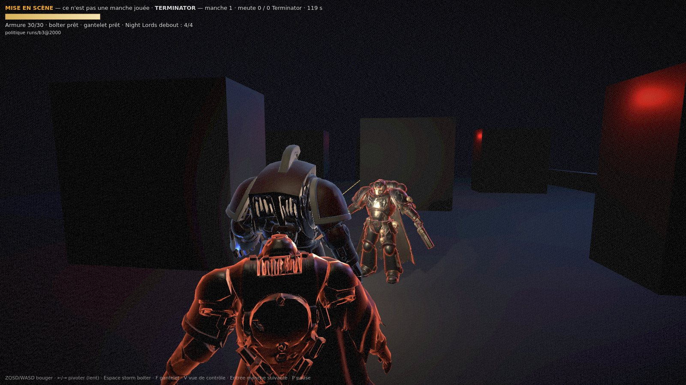

1600×900, ?demo=reveal&shot=7, aucun aléa : mêmes entrées, même image. Mise en scène — le pas de simulation est le vrai, mais les positions de départ et les actions sont scriptées. Ce n'est pas une manche jouée, et le HUD le dit dans l'image.

t7, ?impact=0 — la rafale part, le prédateur n'est qu'une silhouette Night Lord à 3,2 m dans l'axe, un second à 1,4 m sur le flanc gauche. La trace du bolter traverse le cadre. Sans flash, on ne lit qu'un contour.

t7, flash de bouche — il apparaît, en pleine poitrine Le Night Lord à 3,2 m prend +11,1/255 quand le sol devant en prend +2,9 et le mur du fond +0,9. C'est l'inverse du jeu joué, où il ne prenait que +1,6 à 6 m : à 1,9 m du canon, la lumière le sculpte.
Ce que la démo met en scène, et ce qu'elle ne touche pas Les positions de départ et le script d'actions (4 ticks de marche, une rafale au tick 6). Le reste est la simulation :
jeu joué (graine 6, t151)
démo (reveal, t7)
distance du prédateur
6,3 m
3,2 m
gain de luminance sur lui
+1,6/255
+11,1/255
gain sur le sol devant
+10,6/255
+2,9/255
dégâts, événements, bruit
calculés par step(), identiques dans les deux cas
Autrement dit : le plan est impossible en jeu, non parce que la lumière est mal réglée, mais parce qu'un Night Lord à 3 m dans la gueule du bolter est déjà mort. La démo le place là où le scénario l'exige, et le dit.